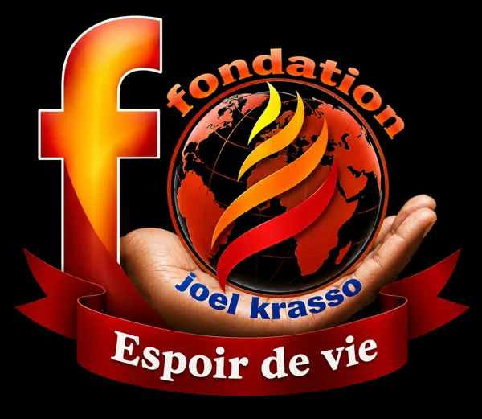

Protéger
Offrir un cadre sûr aux enfants orphelins et vulnérables.
 Groupe Baruck
Groupe Baruck
Engagement humanitaire · Afrique de l’Ouest
Protéger les enfants, accompagner les familles et apporter une aide concrète là où elle est nécessaire.
« Avec Dieu, nous ferons des exploits. »


Président fondateurDjoro Joël Shaloom Krasso
Notre mission
Espoir de Vie s’engage auprès des enfants orphelins, des familles fragilisées, des femmes et des personnes sans-abri.
L’action de la fondation s’inscrit dans l’esprit de la Déclaration des droits de l’enfant : le droit à la vie, à l’éducation, à la santé, à une alimentation suffisante et à la protection.
Offrir un cadre sûr aux enfants orphelins et vulnérables.
Faciliter la scolarisation par la remise de fournitures et de kits scolaires.
Apporter une aide alimentaire et soutenir l’accès aux soins.
Soutenir les veuves, les mères et les familles confrontées à la précarité.
Aller sur le terrain et fédérer les bonnes volontés autour d’actions concrètes.
Nos actions en chiffres
Un projet fondateur
De la construction à l’accueil des premiers enfants, l’orphelinat Espoir de Vie est né d’une volonté simple : offrir protection, stabilité et attention.
Édification du bâtiment destiné à accueillir et accompagner les enfants.
Préparation des dortoirs, des berceaux, de la cuisine et des espaces de vie.
Accueil des premiers enfants avant l’ouverture officielle de l’établissement.
Ouverture officielle en présence des communautés et des autorités invitées.
Le président fondateur partage un moment de convivialité avec les enfants accueillis.
Agir sur le terrain
Au fil des années, Espoir de Vie a multiplié les initiatives en faveur des enfants, des familles et des communautés les plus fragiles.
Grôh · Département d’Hiré · Côte d’Ivoire
Cent jouets remis aux enfants du village autour d’un arbre de Noël et d’un moment de partage.
100 jouetsZaroko et Divo · Côte d’Ivoire
Distribution de cartables, cahiers, fournitures et vivres aux enfants orphelins, dont 200 bénéficiaires au quartier Dialogue de Divo pour la rentrée 2016–2017.
Côte d’Ivoire
Dons aux mères, aide alimentaire aux veuves et accompagnement de petites initiatives génératrices de revenus.
Divo et Zaroko · Côte d’Ivoire
Des vêtements et des chaussures ont été distribués aux enfants de l’orphelinat et des communautés environnantes.
Fondation Marie Rose Guiro
Remise de vivres et de produits non alimentaires, ainsi qu’accueil d’organisations venues rencontrer les enfants et les équipes.
Guinée et Burkina Faso
Soutien aux enfants de la rue, partage avec des personnes sans-abri et actions en faveur de la santé, de l’alimentation et de l’éducation.
Notre présence
De la Côte d’Ivoire à la Guinée et au Burkina Faso, nos actions portent une même volonté de protection et de solidarité.
Grôh, Hiré, Zaroko et Divo : jouets, kits scolaires, aide aux familles, vêtements, chaussures et construction de l’orphelinat.
Des actions autour du droit à la santé, à une alimentation équilibrée, à la protection et à l’éducation.
Soutien aux enfants de la rue et moments de partage avec des personnes sans-abri pendant une tournée africaine.
Mémoire d’actions
Chaque initiative est une rencontre : un enfant qui retrouve le chemin de l’école, une famille soutenue, une communauté rassemblée autour d’un même élan.
De Grôh à N’Zérékoré, chaque action rappelle qu’un geste concret peut rendre confiance et ouvrir de nouvelles perspectives.
À nos côtés
Espoir de Vie crée des liens avec des fondations, des communautés religieuses et des organisations associatives qui partagent son engagement.
Des vivres et des produits non alimentaires ont été remis pour accompagner ses bénéficiaires.
Des actions de solidarité ont été menées auprès des mamans à l’occasion de la fête des Mères.
L’orphelinat a reçu la visite d’une organisation française venue rencontrer les enfants et les équipes.
Espoir de Vie
Vous souhaitez connaître les actions de la fondation, proposer un partenariat ou contribuer à une initiative ? Échangeons.